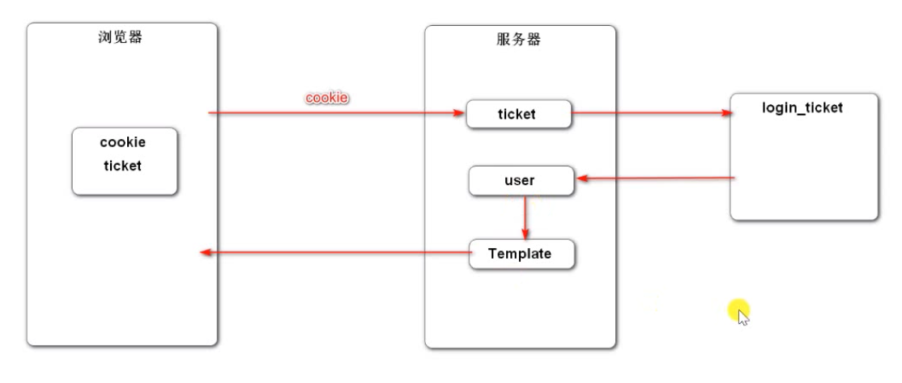
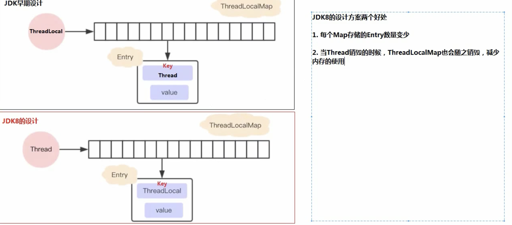
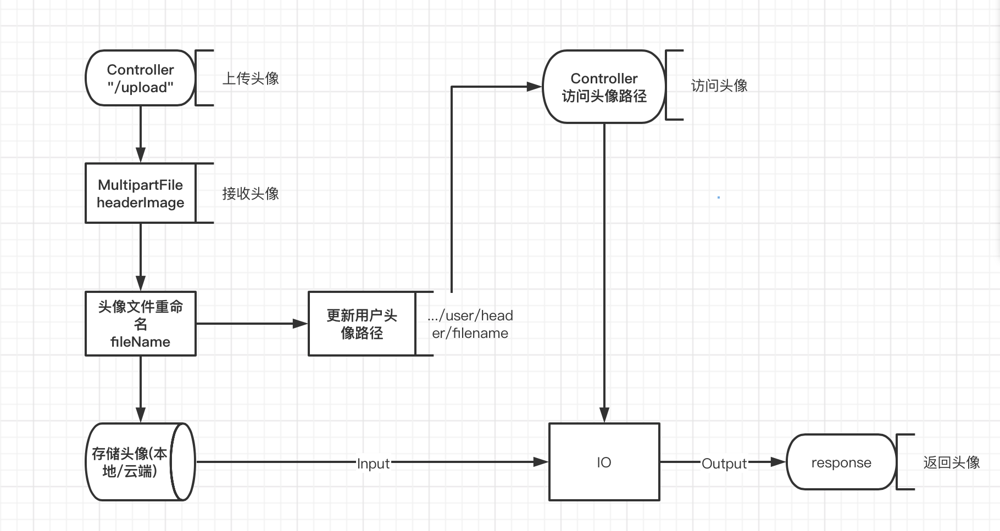

前言
本篇文章记录开发登录、退出模块的过程和拦截器的应用、用ThreadLocal保存登录信息等内容
登录
Dao层
数据库登录凭证表
1
2
3
4
5
6
7
8
9CREATE TABLE `login_ticket` (
`id` int NOT NULL AUTO_INCREMENT,
`user_id` int NOT NULL,
`ticket` varchar(45) NOT NULL,
`status` int DEFAULT '0' COMMENT '0-有效; 1-无效;',
`expired` timestamp NOT NULL,
PRIMARY KEY (`id`),
KEY `index_ticket` (`ticket`(20))
) ENGINE=InnoDB DEFAULT CHARSET=utf8登录凭证的实体类
1
2
3
4
5
6
7
8
9public class LoginTicket {
//ticket是凭证，发送给浏览器保存，其他数据是服务端自己存
//ticket是唯一的
private int id;
private int userId;
private String ticket;
private int status;
private Date expired;Mapper和映射器
Mapper映射器可以像开发首页那样在xml里写sql，也可以通过注解实现，现在看看注解怎么实现1
2
3
4
5
6
7
8
9
10
11
12
13
14
15
16
17
18
19
20
21
22
23
24
public interface LoginTicketMapper {
({
"insert into login_ticket (user_id,ticket,status,expired) ",
"values(#{userId},#{ticket},#{status},#{expired}) "
})
//设定自增属性
(useGeneratedKeys = true, keyProperty = "id")
int insertLoginTicket(LoginTicket loginTicket);
({
"select id,user_id,ticket,status,expired ",
"from login_ticket where ticket=#{ticket}"
})
//ticket是凭证，发送给浏览器保存，其他数据是服务端自己存
LoginTicket selectByTicket(String ticket);
({
“update login_ticket set status=#{status} where ticket=#{ticket} “
})
int updateStatus(String ticket,int status);
}在注解里用if（只是示例）
1
2
3
4
5
6
7
8({
“<script>”,
“update login_ticket set status=${status} where ticket=#{ticket} ",
"<if test=\"ticket!=null\">",
"and 1=1",
"</if>",
"</script>"
})
Mapper映射器因为没有报错，都是手动写，很容易出错，所以每次写完映射器最好在Test类里测试一下，否则后面找错会很麻烦1
2
3
4
5
6
7
8
9
10
11
12
13
14
15
16
17
18
public void testInsertLoginTicket(){
LoginTicket loginTicket = new LoginTicket();
loginTicket.setUserId(12);
loginTicket.setStatus(1);
loginTicket.setTicket("abc");
//60分钟
loginTicket.setExpired(new Date(System.*currentTimeMillis*() + 1000 * 60 *10));
loginTicketMapper.insertLoginTicket(loginTicket);
}
public void testSelectLoginTicket(){
LoginTicket loginTicket = loginTicketMapper.selectByTicket("abc");
System.*out*.println(loginTicket);
loginTicketMapper.updateStatus("abc",0);
}
Service 层
1 |
|
Controller
1 | /** |
模板
- 和注册一样，用户登录失败后要在输入框填上上次输入的值
但是value从哪取值呢？
用户第一次登录的时候，给Controller里的login方法，传入了username,password,code,rememberme
但是当传入的不是一个实体的时候，Spring MVC不会把参数注入model
所以要在request对象(第四篇手动获取请求里说过)里取。
- thymeleaf从request里取参数的语法是
${param.username}
所以动态value应该写th:value=“${param.username}” - 复习，thymeleaf从实体里取参数
th:value=“${user!=null?user.username:’’}”
直接取参数，如果用户没有post过数据，参数就为空，所以不用判断，但是从实体里取要判断实体是否存在避免空指针异常。 - 同理，从request里取参数rememberme，把「记住我」勾选框改为动态：
th:checked=“${param.rememberme}”> - 还有，错误信息控制和注册一样：
1
2
3
4
5
6<input type=“text” th:class=“|form-control ${usernameMsg!=null?'is-invalid':''}|"
th:value="${param.username}"
id="username" name="username" placeholder="请输入您的账号!" required>
<div class="invalid-feedback" th:text="${usernameMsg}">
该账号不存在!
</div>
退出
Dao层
在写登录Dao层的时候已经把退出写好了1
2
3
4({
“update login_ticket set status=#{status} where ticket=#{ticket} “
})
int updateStatus(String ticket,int status);
Service层
1 | //UUID具有唯一性(MAC地址、时间等元素保证唯一性），所以两个用户不会有同一个ticket |
显示登录信息
拦截器
- 用户登录以后需要显示已登录的用户名，登录后的页面也不应该显示注册和登录按钮
但是不可能每个页面都处理，登录和不登录的页面，那样耦合度太高而且后期更改太麻烦。 - Spring 的 拦截器可以解决这个问题
能拦截浏览器的请求，并在请求插入代码，批量解决多个请求共有的业务拦截器示例
定义拦截器，实现HandlerInterceptor
打印日志，看handler具体是什么1
2
3
4
5
6
7
8
9
10
11
12
13
14
15
16
17
18
19
20
21
22
23
24
25
26
27
public class TestInterceptor implements HandlerInterceptor {
//接口有三个方法，default修饰，不强制实现
private static final Logger logger = LoggerFactory.getLogger(TestInterceptor.class);
//在Controller之前执行
public boolean preHandle(HttpServletRequest request, HttpServletResponse response, Object handler) throws Exception{
logger.debug("preHandle:" + handler.toString());
return true;
}
//Controller之后，模板引擎前执行
public void postHandle(HttpServletRequest request, HttpServletResponse response, Object handler, ModelAndView modelAndView) throws Exception {
logger.debug("postHandle:" + handler.toString());
}
//在模板引擎之后执行
public void afterCompletion(HttpServletRequest request, HttpServletResponse response, Object handler, Exception ex) throws Exception {
logger.debug("afterCompletion:" + handler.toString());
}
}配置拦截器，指定拦截的路径
配置类，定义哪些类型（静态资源）不需要拦截，还有需要拦截的路径：1
2
3
4
5
6
7
8
9
10
11
12
13
14
15
16
public class WebMvcConfig implements WebMvcConfigurer {
private TestInterceptor testInterceptor;
public void addInterceptors(InterceptorRegistry registry) {
// /* 是拦截所有的文件夹，不包含子文件夹
// /** 是拦截所有的文件夹及里面的子文件夹
registry.addInterceptor(testInterceptor)
.excludePathPatterns(“/**/*.css", "/**/*.js", "/**/*.png", "/**/*.jpg", “/**/*.jpeg”)
.addPathPatterns("/register", "/login");
}
}
运行一下登录页面，可以看到控制台的信息1
2
3preHandle:public java.lang.String com.lizehao.community.community.controller.LoginController.getLoginPage()
postHandle:public java.lang.String com.lizehao.community.community.controller.LoginController.getLoginPage()
afterCompletion:public java.lang.String com.lizehao.community.community.controller.LoginController.getLoginPage()
说明已经拦截到，而拦截器对象handler 就是拦截的目标（本次请求拦截到的是Controller的getLoginPage()方法）
拦截器应用显示用户登录信息
步骤：
每一次请求页面都要判断ticket存在，有效，过期时间，还有获取user对象和隔离存储user对象
所以应该用拦截器处理，不应该每次都写

- 请求开始的时候查询登录用户
- 请求中持有用户数据
- 模板上显示用户数据
- 请求结束时清理用户数据
ThreadLocal
ThreadLocal 是 Java 里一种特殊变量，它是一个线程级别变量，每个线程都有一个 ThreadLocal 就是每个线程都拥有了自己独立的一个变量，竞态条件被彻底消除了，在并发模式下是绝对安全的变量。
- 刚开始以为是ThreadLocal是上面的结构，但是其实，ThreadLocal只相当于一个局部变量，ThreadLocalMap并不是ThreadLocal来维护的，而是每一个线程都有自己的ThreadMap，ThreadLocal只是里面的Entry的Key, 调用set和get方法也是先获取当前的线程的ThreadLocalMap,然后在里面存取。

看一下这两个方法的源码：1
2
3
4
5
6
7
8
9
10
11
12public void set(T value) {
//获取当前线程对象
Thread t = Thread.currentThread();
//获取当前线程的ThreadLocalMap对象
ThreadLocalMap map = getMap(t);
//判断map是否存在
if (map != null)
//存在就用map.set设置entry，this指的是调用方法的ThreadLocal
map.set(this, value);
else
createMap(t, value);
}
1 | public T get() { |
定义拦截器和配置拦截器
从Cookies里取值的工具
1
2
3
4
5
6
7
8
9
10
11
12
13
14
15
16
17
18
19
20
21
22
23public class CookieUtil {
//从Cookie里取值的工具
public static String getValue(HttpServletRequest request, String name){
if(request == null || name == null){
throw new IllegalArgumentException("参数为空！");
}
Cookie[] cookies = request.getCookies();
if(cookies != null) {
for(Cookie cookie : cookies){
//字符串比较一定要用equals,刚又出错了
if(cookie.getName().equals(name)){
return cookie.getValue();
}
}
}
return null;
}
}ThreadLocal实现线程隔离存储user对象
1
2
3
4
5
6
7
8
9
10
11
12
13
14
15
16
17
18
19
20
21
22
23
24/**
* 持有用户信息，用于代替Session对象
*/
public class HostHolder {
//相当于一个局部变量，这个局部变量是Thread的ThreadLocalMap里面的Key
private ThreadLocal<User> users = new ThreadLocal<>();
public void setUsers (User user) {
users.set(user);
}
public User getUser(){
return users.get();
}
//清除掉当前Thread的ThreadLocalMap
//这也是JDK8设计ThreadLocal的好处，每个线程自己维护ThreadLocalMap，用完就可以销毁
public void clear(){
users.remove();
}
}拦截器
1
2
3
4
5
6
7
8
9
10
11
12
13
14
15
16
17
18
19
20
21
22
23
24
25
26
27
28
29
30
31
32
33
34
35
36
37
38
39
40
41
42
43
44
45
46
47
48
49
50
51
52
53
54
55
56
57
58
59
60
61
62
63
64
65
66
public class LoginTicketInterception implements HandlerInterceptor {
LoginTicketMapper loginTicketMapper;
UserService userService;
HostHolder hostHolder;
public boolean preHandle(HttpServletRequest request, HttpServletResponse response, Object handler) throws Exception {
//接口的参数不能改，所以这里不能用CookieValue注解获得Cookie数据
//所以这里用request获取Cookie，这个功能很常用，所以封装在CookieUtil里面
//从Cookie中获取ticket
String ticket = CookieUtil.getValue(request,"ticket");
//从ticket里找到user
if(ticket != null) {
// 业务都从Service层调用，简单也要把Mapper里的方法封装到Service层
// int userId = loginTicketMapper.selectByTicket(ticket).getUserId();
//查询凭证
LoginTicket loginTicket = userService.findLoginTicket(ticket);
//检查过期时间
//凭证存在，有效，没过期
if(loginTicket !=null && loginTicket.getStatus() == 0 && loginTicket.getExpired().after(new Date())){
//根据凭证查用户
User user = userService.findUserById(loginTicket.getUserId());
System.out.println(user+”ddd”);
//在本次请求中持有该用户
//因为服务器要并发，所以user不应该存在容器里，容易冲突
//应该隔离存放
//存在当前线程的ThreadLocalMap里，key是users
hostHolder.setUsers(user);
}
}
return true;
}
//在模板引擎前就要注入user
public void postHandle(HttpServletRequest request, HttpServletResponse response, Object handler, ModelAndView modelAndView) throws Exception {
User user = hostHolder.getUser();
if(user != null && modelAndView != null){
modelAndView.addObject("loginUser",user);
}
}
//模板结束后，清理当前线程的ThreadLocalMap
public void afterCompletion(HttpServletRequest request, HttpServletResponse response, Object handler, Exception ex) throws Exception {
hostHolder.clear();
}
}配置拦截器
1
2
3
4
//全部页面都要进行登录后处理，所以全部都拦截
registry.addInterceptor(loginTicketInterception)
.excludePathPatterns("/**/*.css", "/**/*.js", "/**/*.png", "/**/*.jpg", "/**/*.jpeg");
帐号设置、上传头像
访问设置页面
Controller
1
2
3
4(path = “/setting”,method = RequestMethod.GET)
public String getSettingPage(){
return "/site/setting";
}模板先进行基本设置，能够访问到即可
上传头像
1
2
3
4
5
6
7
8
9
10
11
12
13
14
15
16
17
18
19
20
21
22
23
24
25
26
27
28
29
30
31
32
33
34(path = "/upload", method = RequestMethod.POST)
public String uploadHeader(MultipartFile headerImage, Model model){
if(headerImage == null) {
model.addAttribute("error","您还没有选择图片");
return "/site/setting";
}
//文件后缀名
String fileName = headerImage.getOriginalFilename();
String suffix = fileName.substring(fileName.lastIndexOf("."));
if(StringUtils.isBlank(suffix)) {
model.addAttribute("error","图片的格式不正确");
return "/site/setting";
}
//生成随机文件名
fileName = CommunityUtil.generateUUID() + suffix;
//文件存放路径
File dest = new File(uploadPath + "/" + fileName);
try {
//存储文件
headerImage.transferTo(dest);
} catch (IOException e) {
logger.error("上传文件失败：" + e.getMessage());
throw new RuntimeException("上传文件失败：" + e.getMessage());
}
//更新当前用户头像的路径
User user = hostHolder.getUser();
String headerUrl = domin + contextPath + "/user/header/" + fileName;
userService.updateHeader(user.getId(), headerUrl);
return "redirect:/index";
}
访问头像
1 | (path = “/header/{fileName}”, method = RequestMethod.GET) |
模板需要更改的地方
1 | <form class=“mt-5” method=“post” enctype=“multipart/form-data" th:action="@{/user/upload}"> |
1 | <div class=“custom-file”> |
头像上传访问逻辑图

修改密码
Controller
1 | (path = "/changePassword", method = RequestMethod.POST) |
模板
1 | <form class=“mt-5” method=“post” th:action=“@{/user/changePassword}">> |
1 | <input type=“password” th:class=“|form-control ${passwordMsg!=null?'is-invalid':''}|" id="old-password" |
1 | <input type=“password” th:class=“|form-control ${confirmMsg!=null?'is-invalid':''}|" id="confirm-password" |
注解
理解注解
注解刚开始看定义看的云里雾里，只知道怎么用，但是完全不知道怎么运行的，后来知道注解定义内部是不包含逻辑代码的，就更疑惑了，没有逻辑代码，注解的功能是怎么实现的呢？
自己定义注解后，就知道，
注解其实相当于一个标签
具体怎么使用这个标签，要看定义标签的人/工具 想怎么用这个标签。
定义注解
Java语言使用@interface语法来定义注解（Annotation ），它的格式如下：1
2
3
4
5public Report {
int type() default 0;
String level() default “info”;
String value() default “”;
}
- 常用元注解
- @Target 自定义的注解的作用范围
类或接口：
ElementType.TYPE
字段：
ElementType.FIELD
方法：
ElementType.METHOD
构造方法：
ElementType.CONSTRUCTOR
方法参数：
ElementType.PARAMETER - @Retention 生效时间（编译有效还是运行有效）
仅编译期：
RetentionPolicy.SOURCE
仅class文件：
RetentionPolicy.CLASS
运行期：
RetentionPolicy.RUNTIME如果@Retention不存在，则该Annotation默认为CLASS。因为通常我们自定义的Annotation都是RUNTIME，所以，务必要加上@Retention(RetentionPolicy.RUNTIME)这个元注解
- @Document 生成文档的时候加不加注解
- @Inherited 父类有注解，子类是否继承
- 总结如何定义注解
1.用@interface定义注解
2.添加参数和默认值，核心参数使用value名称
3.用元注解配置使用注解
根据@Retention的配置： - SOURCE类型的注解在编译期就被丢掉了；
- CLASS类型的注解仅保存在class文件中，它们不会被加载进JVM；
- RUNTIME类型的注解会被加载进JVM，并且在运行期可以被程序读取。
如何使用注解完全由工具决定。SOURCE类型的注解主要由编译器使用，因此我们一般只使用，不编写。CLASS类型的注解主要由底层工具库使用，涉及到class的加载，一般我们很少用到。只有RUNTIME类型的注解不但要使用，还经常需要编写。
因此，我们只讨论如何读取RUNTIME类型的注解。
- 我们可以在运行期通过反射读取RUNTIME类型的注解
- 判断某个注解是否存在于Class 、Field 、Method或Constructor ：
Class.isAnnotationPresent(Class)
Field.isAnnotationPresent(Class)
Method.isAnnotationPresent(Class)
Constructor.isAnnotationPresent(Class) 使用反射API读取Annotation：
Class.getAnnotation(Class)
Field.getAnnotation(Class)
Method.getAnnotation(Class)
Constructor.getAnnotation(Class)使用自定义注解，需要配合自己写的方法，来操作这个”标签”，示例：
定义注解：1
2
3
4
5
6(RetentionPolicy.RUNTIME)
(ElementType.FIELD)
public Range {
int min() default 0;
int max() default 255;
}
使用注解：1
2
3
4
5
6
7public class Person {
(min=1, max=20)
public String name;
(max=10)
public String city;
}
处理注解：1
2
3
4
5
6
7
8
9
10
11
12
13
14
15
16
17
18
19
20void check(Person person) throws IllegalArgumentException, ReflectiveOperationException {
// 遍历所有Field:
for (Field field : person.getClass().getFields()) {
// 获取Field定义的@Range:
Range range = field.getAnnotation(Range.class);
// 如果@Range存在:
if (range != null) {
// 获取Field的值:
Object value = field.get(person);
// 如果值是String:
if (value instanceof String) {
String s = (String) value;
// 判断值是否满足@Range的min/max:
if (s.length() < range.min() || s.length() > range.max()) {
throw new IllegalArgumentException("Invalid field: " + field.getName());
}
}
}
}
}
以上定义注解和处理注解摘抄自廖雪峰的博客
检查登录状态
- 在没有登录的时候，如果用户知道个人设置，个人主页等路径，也是可以访问到页面的，这是不合理的
如果访问了管理员等页面，或者上传了数据，会有安全隐患 - 所有类似的网页都要设置，所以用拦截器
在方法前自定义注解，拦截器拦截有注解的方法
定义注解：1
2
3
4
5(ElementType.*METHOD*)
(RetentionPolicy.*RUNTIME*)
public LoginRequired {
}
这个注解里面不用写任何代码，这只是一个标签，拦截带这个标签的方法即可
定义拦截器：1
2
3
4
5
6
7
8
9
10
11
12
13
14
15
16
17
18
19
20
21
22
23
24
25
26
27
28
29
30
31
32
33
34
35
public class LoginRequiredInterceptor implements HandlerInterceptor {
private HostHolder hostHolder;
//让没有登录的用户不能访问特定网页
public boolean preHandle(HttpServletRequest request, HttpServletResponse response, Object handler) throws Exception {
//先判断拦截的是不是一个方法
if(handler instanceof HandlerMethod) {
//通过反射获取注解，拦截到的请求里只处理带注解的，配置里只用排除静态资源
HandlerMethod handlerMethod = (HandlerMethod) handler;
Method method = handlerMethod.getMethod();
LoginRequired loginRequired = method.getAnnotation(LoginRequired.class);
//preHandle 是按配置顺序调用的，所以先调用LoginTicketinterception
//如果用户是已登录用户，hostHolder就已经添加了user对象
//所以，当注解存在，并且用户没有登录的情况下，拦截方法不让用户访问
if(loginRequired != null && hostHolder.getUser() == null) {
//不让用户访问该界面，并且重定向到登录页面
//Controller里面的重定向底层也是这样写的
response.sendRedirect(request.getContextPath() + "/login");
return false;
}
}
return true;
}
}
配置拦截器:1
2registry.addInterceptor(loginRequiredInterceptor)
.excludePathPatterns("/**/*.css", "/**/*.js", "/**/*.png", "/**/*.jpg", "/**/*.jpeg");